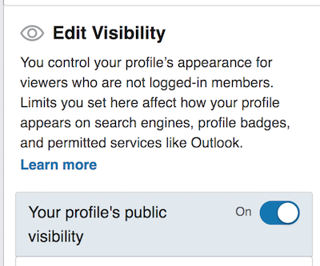
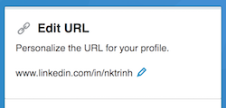

Improve Your LinkedIn Profile
Have job opportunities come to you by optimizing your LinkedIn profile! Complete this simple process to get personalized tips from a career mentor.
Here’s how to submit your LinkedIn profile for feedback now:
- Check out this checklist for tips on optimizing your LinkedIn profile (optional).
- Make sure your profile is in English. If you do not have an English profile yet, check out LinkedIn's advice on how to create a secondary language profile.
-
Make your profile publicly visible. Scroll down and set the profile section toggles to
Showunder the “Edit Visibility” section of your public profile edit page .- 
-
Create a custom profile URL in the “Edit URL” section of
your public profile edit page
.
- 
-
Submit your public profile URL (such as
www.linkedin.com/in/udacitystudent) for guidance from a career mentor by clicking “Submit Project” below.